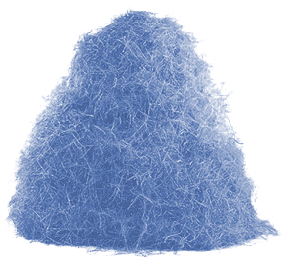
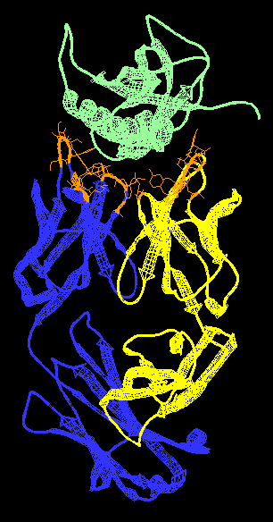
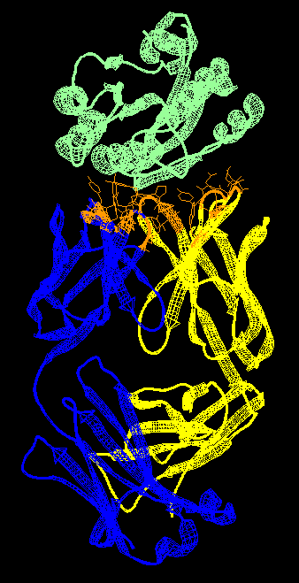
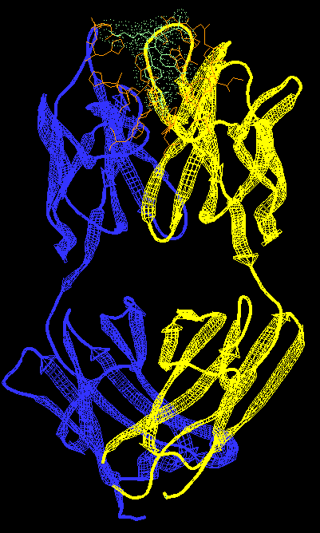
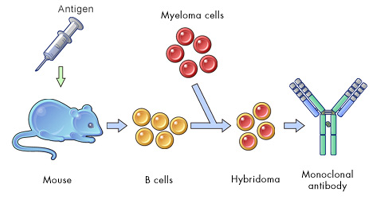

Library Approaches
- Antibody selection
- Directed Evolution
- Combinatorial Libraries


Cells, phages, ribosomes, or microemulsions
In all library methods, there is first diversity generation and then selection of desired variants. Here we illustrate a library of genes in which the one in tan has a property that is distinct from the others. A library of genes drawn as nine arrows scattered over the field, one of them tan — the variant with a property the others lack. On the click every arrow is shut inside its own oval compartment: a cell, a phage, a ribosome or a microemulsion, each one tying a gene to the protein it encodes.A Selection involves a procedure applied to the library population that results in selective survival of the desired population
A Screen involves individually examining members of the library and choosing those members with the desired activity
There are many ways of generating the genetic diversity, several ways of associating genotype with phenotype, and many ways of enriching for desirable variants. The enrichment process can be either a selection or screen. In a selection, you apply a procedure to the library population that results in selective survival of the desired population. In a screen, you individually assay each member of the population and choose those with desired activity. The two ways of enriching a library, set against each other: a selection acts on the whole population at once and lets only the desired members survive, while a screen examines members one at a time.![An antibody anatomy diagram. Across the top, IgM drawn as a ten-armed pentamer, IgG as the familiar Y, and IgA as a four-armed dimer. Lines lead down from the IgG to an enlarged Y labelled domain by domain: the two antigen binding sites at the tips, the light chain in pale blue folded over the heavy chain in gold, the hinge region with its disulphide bonds, and an oligosaccharide on the stem. A key marks the hypervariable region, the variable region and the constant region, and brackets mark off the Fab, Fv and Fc fragments.](img/13-fab.png)




Heavy chain gene – located on chromosome 14
Light chain kappa (κ) gene – located on chromosome 2
Light chain lambda (λ) gene – located chromosome 22
65 V genes x 27 D genes x 6 J Genes = 10530 combinations Light Chain similarly has V and J recombination
VDJ recombination results in one antibody gene of the IgM form. An initial “hit” that binds the antigen (weakly) is selected from a single B cell expressing a single IgM
Activation-Induced (Cytidine) Deaminase (AID): mutates C’s to U’s in the variable regions
The G:U mismatch is repaired by a DNA repair mechanism involving an error-prone DNA polymerase
Additional mechanisms introduce codon insertions/deletions in the variable regions
Replacement of the heavy-chain IgM constant region with an IgG version